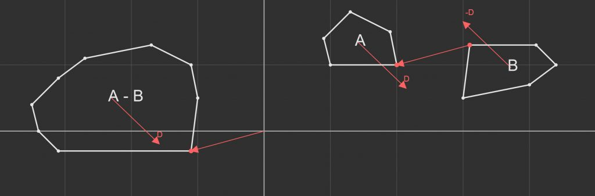

Winter
GJK: Collision detection algorithm in 2D/3D

In my last article, I only covered sphere vs. sphere collisions because they are the simplest to compute. Spheres are nice and all, but there comes a time when more complex shapes are needed. One popular algorithm for testing collisions is the Gilbert-Johnson-Keerthi algorithm, or GJK for short. With it we can detect collisions between any two convex polygons.
The GJK algorithm is very useful and widely used, but no good visualization or concise explanations exist for some reason. A few years ago, I listened and relistened to a video by Casey Muratori that explains the algorithm in great detail and goes through some smart insights that give a good mental image of how it works. Yet I have found no full interactive visualizations. Let's jump into it!
Difference between spheres and polygons #
Testing for a collision between spheres is easy because there are only two points in the system. This leaves us with a single vector that we can compare against the sum of their radii to determine if there is a collision.
With polygons we cannot make such simplifications. They are made from multiple vertices, removing any apparent way of finding their distance and clear radius property to compare against. We need a smarter way of testing for a collision.
Like we subtracted the points in the sphere system, let's see what happens if we subtract the vertices of the polygons.
Subtracting two polygons with the same number of vertices is straightforward, but if we want to support various polygons, we need to subtract each vertex from every vertex on the other polygon. Because there are multiple vertices, we are not left with a single vector, but many that form another polygon. This results in a cloud of number vertices that we need to process further to select the outer convex hull from.
This outer hull is known as the Minkowski difference. It represents the distance between every point of the two polygons. We are going to use it to turn two polygons into one that we can analyze to detect a collision. The key is that if the origin is inside the difference, there must have been two points that subtracted to 0; meaning there is overlap somewhere.
Abstracting shapes into supporting points #
The Minkowski difference is nice for visualization, but far too expensive to compute in real time; we need a way to simplify it.
The GJK algorithm is only concerned with the outer hull of our cloud of vertices, so it would give a substantial speed up if we could cut down on the time spent finding them. Let's think about what puts a vertex on the hull. If we look closer, notice that those vertices have the most extreme components. They got to their locations from subtraction between two other vertices, so for one to be the most extreme, it must have come from the most extreme vertices on the source polygons. If we define 'most extreme' as the furthest in some direction, we can play with the math to get this speed increase.
Finding the furthest vertex is done by iterating over the set of vertices and finding the one with the largest dot product in a direction. Let be the direction and be the cloud of vertices.
Computing took number of steps; making this function an operation. Luckily for us, we can distribute and never have to compute the full difference.
If we distribute the dot product and max function we're left with this:
Now all we need is steps; turning our quadratic time function into a linear one.
We need to reverse the direction for when we distribute max because we want to retain the max value. We want the lest extreme vertex from to subtract from the most extreme vertex from .
These vertices are referred to as supporting points and give a view into the Minkowski difference without ever calculating more than we need.
Let's look at the implementation -- I'm going to continue to use the Collider structs from the physics engine article for consistency, but will only include the new pieces from this article.
We'll start by adding a function that finds the support point in a given direction. Let's call it FindFurthestPoint. If we have other special types of colliders like spheres, capsules, or planes, we can override this function allowing them to be used with GJK as well.
Collider.h
struct Collider { virtual vec3 FindFurthestPoint(vec3 direction) const = 0; };
Next, we'll make a MeshCollider with a list of vertices to act as our polygon. FindFurthestPoint needs to loop over each vertex and compare the distance along the direction. We'll keep track of the max vertex & distance to compare. Once we have iterated over all the points, we'll return the max point.
MeshCollider.h
struct MeshCollider : Collider { private: std::vector<vec3> m_vertices; public: vec3 FindFurthestPoint(vec3 direction) const override { vec3 maxPoint; float maxDistance = -FLT_MAX; for (vec3 vertex : m_vertices) { float distance = dot(vertex, direction); if (distance > maxDistance) { maxDistance = distance; maxPoint = vertex; } } return maxPoint; } };
We can roll all of this into a function called Support that will take two colliders and a direction and return the vertex on the Minkowski difference.
GJK.h
vec3 Support(const Collider& colliderA, const Collider& colliderB, vec3 direction) { return colliderA.FindFurthestPoint( direction) - colliderB.FindFurthestPoint(-direction); }
With these functions, we have abstracted away not only any convex polygon, but any collider type that implements FindFurthestPoint into a single function that we can use in the algorithm.
GJK: Surrounding the origin #
The goal of the GJK algorithm is to determine if the origin is within the Minkowski difference. This would be easy, but we've thrown out the complete difference for the sake of performance. We only have the Support function that gives us one vertex at a time. We need to iteratively search for and build up what's referred to as a simplex around the origin.
A simplex is defined as a shape that has number of vertices with being the number of dimensions. Practically, this represents the simplest shape that can 'select' a region in space. For example, in 2D a triangle is the simplest shape that can select an area containing a specific point. These shapes have simple tests that we can use to determine which vertex, edge, or face is closest to the origin. Depending on which feature is closest, we'll remove, add, or swap points to make the simplex closer to the origin. If we find that the closest feature is already the closest possible, but the origin is not inside, we know there is no collision. Otherwise, if we find the origin inside the simplex we know there has been a collision.
We get the vertices for the simplex from the Support function, so we need to find the direction to the origin from the closest feature. Searching towards the origin allows the algorithm to converge quickly. Let's look an example. We'll start with an arbitrary vertex then add or remove vertices every iteration until we surround the origin or find it's impossible.
We can see that there are two cases that we need to deal with: a line and triangle. We need one more case in the form of a tetrahedron to select a volume if we want 3D collision detection.
To represent the simplex, let's make a wrapper struct around an std::array. This will allow us to keep track of the number of points, while keeping the memory on the stack for quick access.
Simplex.h
struct Simplex { private: std::array<vec3, 4> m_points; int m_size; public: Simplex() : m_size (0) {} Simplex& operator=(std::initializer_list<vec3> list) { for (vec3 point : list) m_points[m_size++] = point; return *this; } void push_front(vec3 point) { m_points = { point, m_points[0], m_points[1], m_points[2] }; m_size = std::min(m_size + 1, 4); } vec3& operator[](int i) { return m_points[i]; } size_t size() const { return m_size; } auto begin() const { return m_points.begin(); } auto end() const { return m_points.end() - (4 - m_size); } };
We need at least one vertex to start, so we'll manually add it. The search direction for the first vertex doesn't matter, but you may get less iterations with a smarter choice. I'm going to use unit x (1, 0, 0) for no particular reason.
GJK.h
bool GJK(const Collider& colliderA, const Collider& colliderB) { // Get initial support point in any direction vec3 support = Support(colliderA, colliderB, vec3(1, 0, 0));
Now that we have one point, we can add it to the simplex and set the search direction towards the origin.
// Simplex is an array of points, max count is 4 Simplex points; points.push_front(support); // New direction is towards the origin vec3 direction = -support;
In a loop, we'll add another point. The exit condition is that this new point is not in front of the search direction. This would exit if the direction finds a vertex that was already the furthest one along it.
while (true) { support = Support(colliderA, colliderB, direction); if (dot(support, direction) <= 0) { return false; // no collision } points.push_front(support);
Now that we have a line, we'll feed it into a function that updates the simplex and search direction. It'll return true or false to signify a collision.
if (NextSimplex(points, direction)) { return true; } } }
That's all for the main loop. It's dead simple in the world of algorithms, but the real work is in the NextSimplex function. We need a series of different checks for each shape of simplex to see what the new simplex should be and what direction we'll search in next.
The NextSimplex function will act as a dispatcher to three other functions, one for each shape.
GJK.h
bool NextSimplex(Simplex& points, vec3& direction) { switch (points.size()) { case 2: return Line (points, direction); case 3: return Triangle (points, direction); case 4: return Tetrahedron(points, direction); } // never should be here return false; }
We can add one more helper function to help lessen the headache from these next functions.
bool SameDirection(const vec3& direction, const vec3& ao) { return dot(direction, ao) > 0; }
We'll start with the line case. There are three possible regions that the origin could be in, but realistically only two. We started with point B, and searched in the direction of A, which means that the origin cannot be in the red region. This leaves us with one check between the vector AB and AO. If AO is inside the green region, we move on. If AO is in the blue region, we'll come back to the line case, but B will be replaced.
bool Line(Simplex& points, vec3& direction) { vec3 a = points[0]; vec3 b = points[1]; vec3 ab = b - a; vec3 ao = - a; if (SameDirection(ab, ao)) { direction = cross(cross(ab, ao), ab); } else { points = { a }; direction = ao; } return false; }
In this case, AO is in the same direction as AB, so we know it's in the green region. We'll set the search direction pointing towards the origin and move on. In 2D, you would not need to use cross products, but in 3D the origin could be anywhere in a cylinder around the line, so we need them to get the correct direction.
The triangle case has seven regions, but again we can cull out some impossibilities. Yellow, red, and purple cannot have the origin because the new point we added was A, meaning that the origin cannot be in the direction of the BC face. That leaves us with four regions we need to check.
If the origin is outside the triangle on the AC face, we'll check if it's also in the direction of AC. If it is, then we'll remove B from the simplex and move on, if not, we'll do a line case between AB. If the origin was not in the direction of the AC face, we'll check the AB face. If it's there, we'll do the same line case between AB. Finally, if both checks fail, we know it must be inside the triangle. In 2D we would be done and could return true, but in 3D we need to check if the origin is above or below the triangle and move on.
bool Triangle(Simplex& points, vec3& direction) { vec3 a = points[0]; vec3 b = points[1]; vec3 c = points[2]; vec3 ab = b - a; vec3 ac = c - a; vec3 ao = - a; vec3 abc = cross(ab, ac); if (SameDirection(cross(abc, ac), ao)) { if (SameDirection(ac, ao)) { points = { a, c }; direction = cross(cross(ac, ao), ac); } else { return Line(points = { a, b }, direction); } } else { if (SameDirection(cross(ab, abc), ao)) { return Line(points = { a, b }, direction); } else { if (SameDirection(abc, ao)) { direction = abc; } else { points = { a, c, b }; direction = -abc; } } } return false; }
The tetrahedron case is the most complex, but almost entirely made up of triangle cases. We don't need to test for the origin below the tetrahedron for the same reason as before. We only need to determine which face, if any, the origin is in the direction of. If there is one, we'll go back to the triangle case with that face as the simplex, but if not, we know it must be inside the tetrahedron and we'll return true.
bool Tetrahedron(Simplex& points, vec3& direction) { vec3 a = points[0]; vec3 b = points[1]; vec3 c = points[2]; vec3 d = points[3]; vec3 ab = b - a; vec3 ac = c - a; vec3 ad = d - a; vec3 ao = - a; vec3 abc = cross(ab, ac); vec3 acd = cross(ac, ad); vec3 adb = cross(ad, ab); if (SameDirection(abc, ao)) { return Triangle(points = { a, b, c }, direction); } if (SameDirection(acd, ao)) { return Triangle(points = { a, c, d }, direction); } if (SameDirection(adb, ao)) { return Triangle(points = { a, d, b }, direction); } return true; }
With that final case, we have completed the GJK algorithm. As you can see it is not that complex looking at it from a geometric point of view. This algorithm only gives you a yes/no answer about a collision, so you cannot respond to it. In the next article I will cover an algorithm that uses the simplex and similar principles to find the collision normal then maybe get into rotational physics. Thanks for reading!
Here is a demo that will let you play around with the algorithm and let you inspect each iteration, here's the full version if you want a better look...
Comments#